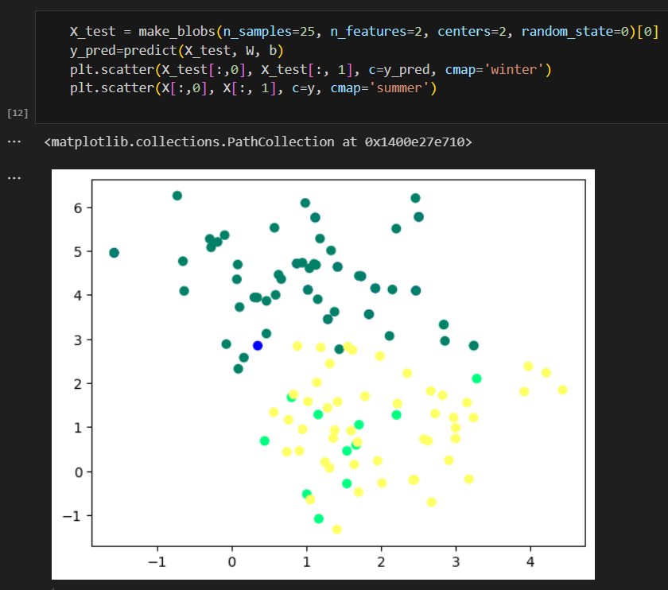
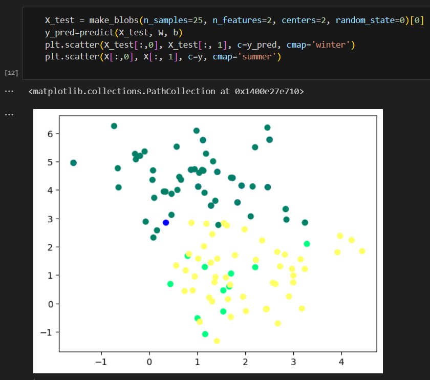

Mes premiers jeux vidéos - Minesweeper
Codé en 6eme dans le meme language, il s'agit d'un projet plus complexe car il demande plus de logique pour faire le compte des bombes et l'algorythme de revelation des cases.
Utilisez les flèches pour decouvrir les differents jeux + un robot

Voiture à helice télécommandée
En 3eme, à l'aide de mes connaissances du BIA, j'ai conçu et imprimé une voiture à helice telecommandée afin de tester les performance de l'helice que j'ai mis au point.
Utilisez les flèches pour voir les differentes étapes

Robotique - Mini robot aspirateur (Fail)
Afin d'innover, j'ai tenter de mettre au point un mini robot aspirateur qui tiendrait sur une table et qui pourrait l'aspirer. Mais le projet était trop ambitieux et a été un echecen raison du manque de puissance de l'aspirateur (il aspirait un peu mais pas assez).
 

Seconde - Decouverte du Machine learning
Alors que l'IA entrait dans une nouvelle ère (ChatGPT a été rendu publique à ce moment), j'ai decidé des decouvrir les secrets de ces IA. Je me suis initié pour cela au Machine learning et au deep learning, qui sont au coeur des IA. Pour cela j'ai emprunté à la bibliothèque des livres à ce sujet, j'ai regardé de nomberuses vidéos dont celle de Machine Learnia et les cours filmés de Stanford. Je souhaitais comprendre les explications mathematiques des modeles de machine learning (perceptron simple et reseaux de neurones). Par la suite j'ai pu effectuer mes premieres regressions lineaires.

Terminale - Prise de la direction de la commission scientifique
Parmi nos projets phares, nous lançons un concours d’avion en papier pour présenter des concepts d’aéronautique de manière ludique. Nous organisons aussi la finalisation du site du BDE sur lequel nous souhaiterions aussi introduire un système de partage de fiche de révisions et publier des articles de vulgarisation scientifique. Pour finir, nous sommes en train d’élaborer la création d’un atelier de programmation ou de robotique au lycée.